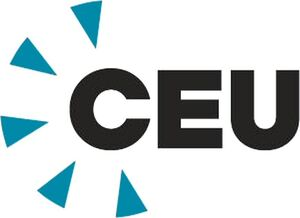

Trade Mark Journal No.2026/009 27 February 2026
WO0000001890534 (16,18,21,25,41,42)
Office of origin: European Union Intellectual Property Office (EUIPO)
Date of International Registration:18 August 2025
Date of designation in the UK:
18 August 2025

The mark contains the colours Black ("RGB 256/256/256") and blue ("RGB 0/110/145").
Letters "CEU" are in black; five triangular shapes arranged in a semi‑circular pattern in blue.
- Class 16
- Name badge holders [office requisites]; ink sticks; note books; writing cases [stationery]; marking pens [stationery]; wrapping paper; pads [stationery]; pens.
- Class 18
- Reusable shopping bags; rucksacks; pocket wallets; bucket bags; luggage, bags, wallets and carrying bags.
- Class 21
- Cups and mugs; drinking bottles for sports.
- Class 25
- Caps being headwear; cap peaks; tee-shirts; sweaters.
- Class 41
- Educating at university or colleges; providing classroom instruction at the university level; conducting distance learning instruction at the university level; postgraduate training courses; providing online courses of instruction at the university level; academic examination services; organisation of examinations to grade level of achievement; education services in the nature of courses at the university level; providing computer-delivered educational testing and assessments; consultancy services relating to academic subjects; developing international student exchange programs; organisation of seminars relating to education; conducting of instructional seminars; conducting of classes; arranging and conducting fairs for academic purposes; conducting of seminars and congresses; organisation of seminars; institutes of education (services provided by -); providing facilities for educational purposes; conducting of educational events; awarding of educational certificates; accreditation of educational services; technological education services; educational services provided by universities; educational services provided by colleges; organising of educational lectures; educational establishments providing courses of instruction (services of -); organising of competitions for education; arranging and conducting of educational events; conducting of educational courses in science; educational services in the nature of law schools; production of educational sound and video recordings; interviewing of contemporary figures for educational purposes; organisation of congresses and conferences for cultural and educational purposes; publication of documents in the field of training, science, public law and social affairs; courses (training -) relating to research and development; education and instruction; audio-visual display presentation services for educational purposes; publishing services; providing electronic publications; online academic library services; research library services; lending library services and library services.
- Class 42
- Provision of research services; technological research; psychological research; scientific research; research relating to data processing; computer aided scientific research services; preparation of technological research reports; research in the field of climate change; research in the field of information technology; research in the field of environmental conservation; providing scientific research information and results from an online searchable database.
CEU GmbH
CEU Immobilienverwaltung SE